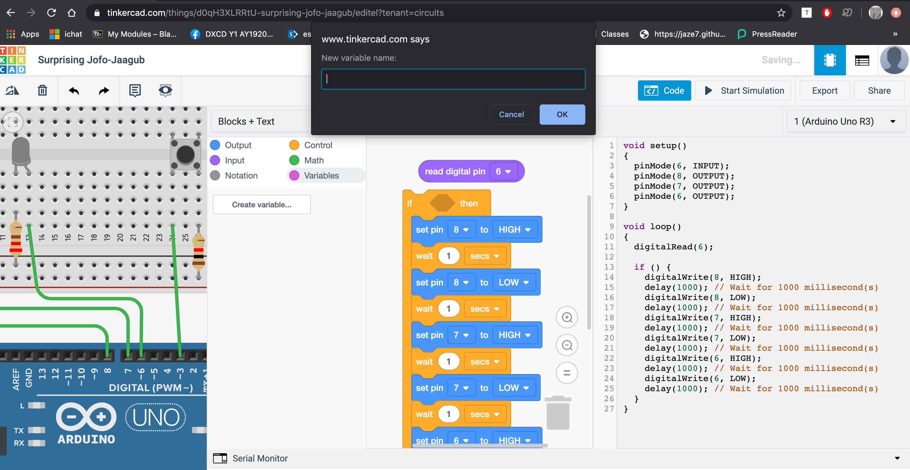

Embedded Programming with Arduino
We learnt about the various components that can be used in a circuit, such as types of switches which control the flow of current, diodes which can light up when current passes through them, and a transistor which is activated when current flows through. As I have taken DNT as one of my O-level subjects, many of these were familiar to me.
Arduino
Arduino is not the board but the entire system, including the grid, UNO board, and programming. It can be used in many ways to create robots and for projects.
Tinkercad is the website we will be using to learn it, where we can simulate a circuit to practice before using Arduino. Running a simulation has many uses. We can calculate the voltage, different scenarios and experiment with the different components to see if it works before trying it out on a real circuit. We can even see how the code looks like.
My first attempt with Tinkercad was a fail because I didn't realise that I was on the 3D Designs workspace instead of the circuit workspace which allows you to do simulations of a circuit. I was wondering why I wasn't able to connect wires from the components and it was because that can only be done in the circuit simulation workspace, which looks similar to the 3D Designs'.
3D Designs workspace:Circuits workspace:
Once I switched to the circuit workspace, I was able to connect the components with wires and play around with the circuit.
Tinkercad Assignment
Reference: I decided to seek help from my father who is in engineering instead of searching online. He helped me to understand the components of a circuit.
The breadboard is connected in a whole row (if you connect one to a 5V on the Arduino, the whole row on the breadboard is 5V).
I placed the components in the circuit following the diagram on Mr Dorville’s site.
I decided to use Blocks for the coding because I am not familiar with the programming language, but I opened up the “Blocks + Test” to try to learn and recognise it.
I used to blocks to create a loop where the light blinked and changed the timing for the second “wait” to make it varied (e.g. fast blink, pulse).
After adding two more lights to the circuit in series, the lights are dimmer as the voltage is divided between all 3. When it is connected in parallel, the LEDs are brighter as the same current is driving them.
SERIES:
PARALLEL:
I rearranged the LEDs to connect to the boards using 6,7,8. Using the same blocks, I duplicated them and changed the pin to the corresponding for the different lights. They flashed in sequence when “Start Simulation” was selected.
After I added the switch to the circuit, I connected it to a pin and tried using the blocks to programme it to turn the lights on but faced a problem: I tried using the “Repeat while _” function but could not find the shape to fill the hexagon which would finish the command, to “accept the control of the switch”. I tried using the “Read digital pin” but it did not fit and I couldn’t put it in. I tried connecting the circuit differently, even trying to create a variable, but it did not fit as well.

The problem was that I connected the resistor and wire wrongly and the voltage was not following through the switch (open), and the pin number was wrong (2, not 8).
After fixing it, the lights turned on in sequence after the button was pressed.
Motors:
- Servo motors can be sent pulses and hold their position (they are quite strong). There are two types of servo motors: one is positional, one is continuous rotational (the number is FS90R). They look the same so the way to differentiate them is to check the number. Positional control motors can be used in drones. However, I think it is too heavy duty for my volume control button. It can be purchased at a cheap price from aliexpress (directly from China).
- A stepper motor has exact positional control.
17 July Practical
Today we had a practical session in class and tried to control a character I2C LCD with Arduino.
After following the wiring diagram to connect the I2C LCD to Arduino UNO, we downloaded the test example library from GitHub "LiquidCrystal_I2C" and loaded it into the Arduino programme.